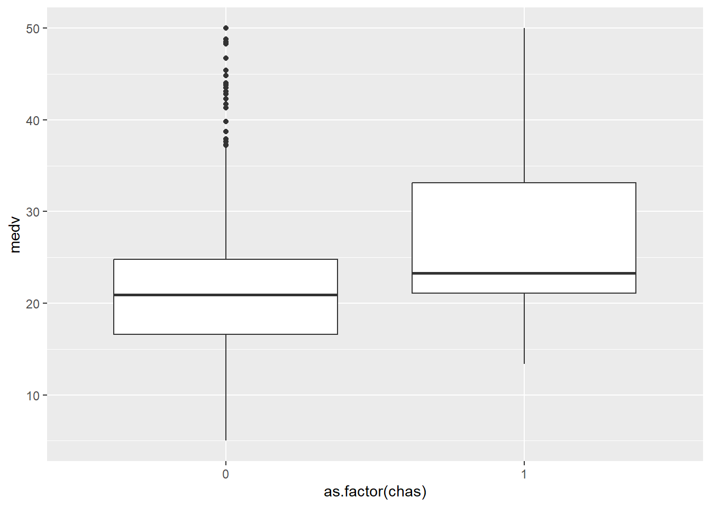
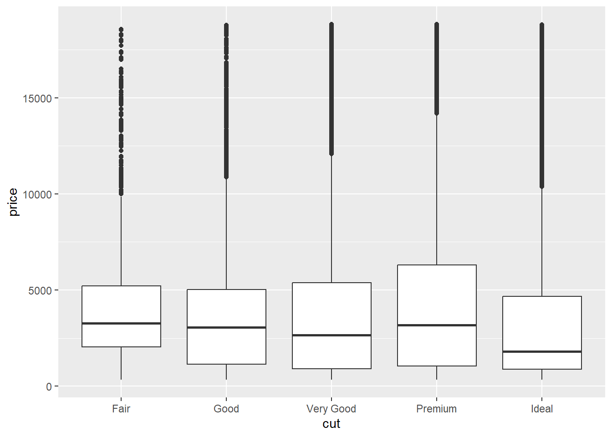
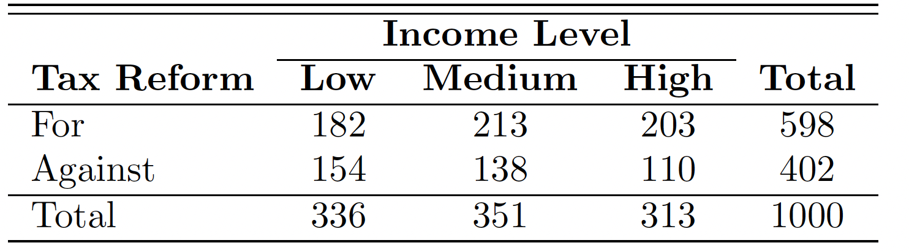
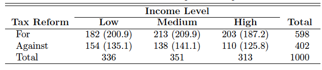

library(ggplot2)
library(MASS)Week 9: Association between Variables
Reference
Probability & Statistics for Engineers & Scientist, 9th Edition, Ronald E. Walpole, Raymond H. Myers, Sharon L. Myers, Keying Ye, Prentice Hall
Chi-squared Test of Independence, http://www.r-tutor.com/elementary-statistics/goodness-fit/chi-squared-test-independence
Understanding ANOVA in R, https://bookdown.org/steve_midway/DAR/understanding-anova-in-r.html
Outline
- Association
- Categorical and Continuous Variables
- ANOVA Test
- Categorical and Categorical Variables
- Chi-squared Test
- Cramer’s V (phi) Coefficient
- Categorical and Continuous Variables
Asscociation
Association between One Numerical Variable and One Categorical Variable
We can use ANOVA test to check the association between one numerical variable and one categorical variable with aov function. ANOVA(AOV) is short for ANalysis Of VAriance.
Let’s play with Boston data set from MASS package.
medv: median value of owner-occupied homes in $1000s.
chas: Charles River dummy variable (= 1 if tract bounds river; 0 otherwise).
ggplot(data = Boston, aes(x = as.factor(chas), y = medv )) + geom_boxplot()
aov1 <- aov(medv ~ chas, data = Boston)
summary(aov1) Df Sum Sq Mean Sq F value Pr(>F)
chas 1 1312 1312.1 15.97 7.39e-05 ***
Residuals 504 41404 82.2
---
Signif. codes: 0 '***' 0.001 '**' 0.01 '*' 0.05 '.' 0.1 ' ' 1Interpretation:
The Df column displays the degrees of freedom for the independent variable (the number of levels in the variable minus 1), and the degrees of freedom for the residuals (the total number of observations minus one and minus the number of levels in the independent variables).
The Sum Sq column displays the sum of squares (a.k.a. the total variation between the group means and the overall mean).
The Mean Sq column is the mean of the sum of squares, calculated by dividing the sum of squares by the degrees of freedom for each parameter.
The F-value column is the test statistic from the F test. This is the mean square of each independent variable divided by the mean square of the residuals. The larger the F value, the more likely it is that the variation caused by the independent variable is real and not due to chance.
The Pr(>F) column is the p-value of the F-statistic. This shows how likely it is that the F-value calculated from the test would have occurred if the null hypothesis of no difference among group means were true.
Here, the p-value of the chas variable is very low (p < 0.001), so it appears that the type of chas used has a real impact on the medv.
Revisit the EDA dataset diamonds
price: price in US dollars (\(\$326–\$18,823\))
carat: weight of the diamond (0.2–5.01)
cut: quality of the cut (Fair, Good, Very Good, Premium, Ideal)
color: diamond color, from D (best) to J (worst)
clarity: a measurement of how clear the diamond is (I1 (worst), SI2, SI1, VS2, VS1, VVS2, VVS1, IF (best))
x:length in mm (0–10.74)
y: width in mm (0–58.9)
z: depth in mm (0–31.8)
depth: total depth percentage \(= 2 * z / (x + y) (43–79)\)
table: width of top of diamond relative to widest point (43–95)
Here we want to investigate the relationship between cut and price.
ggplot(data = diamonds, mapping = aes(x = cut, y = price)) +
geom_boxplot()
What can you tell from the boxplot?
aov2 <- aov(price ~ cut, data = diamonds)
summary(aov2) Df Sum Sq Mean Sq F value Pr(>F)
cut 4 1.104e+10 2.760e+09 175.7 <2e-16 ***
Residuals 53935 8.474e+11 1.571e+07
---
Signif. codes: 0 '***' 0.001 '**' 0.01 '*' 0.05 '.' 0.1 ' ' 1Based on the anova test, as the p-value is very low (p < 0.001), so it appears that the type of cut used has a real impact on the price, even though we cannot tell it from the visulization.
In-Calss Exercise: ANOVA Test
Please construct an ANOVA test for
SpeciesandPetal.Length. What is your conclusion?Please construct an ANOVA test for
salaryandsexin theSalariesdata set. What is your conclusion? What aboutsalaryandrank? Note:Salariesis in thecarDatapackage.
Associations between Categorical Variables
Chi-squared Test
We can use Chi-squared Testto determine if a population has a specified theoretical distribution. We can also use Chi-squared Test to check the independence of two categorical features/attributes.
- \(H_0\): (null hypothesis) The two variables are independent.
- \(H_1\): (alternative hypothesis) The two variables are dependent.
We need the contingency table. Contingency table is a table with observed frequencies. Let’s see the following example.
Example 1. Suppose that we wish to determine whether the opinions of the voting residents of the state of Illinois concerning a new tax reform are independent of their levels of income. Members of a random sample of 1000 registered voters from the state of Illinois are classified as to whether they are in a low, medium, or high income bracket and whether or not they favor the tax reform.
The following is \(2 \times 3\) contingency table.

Assuming the independence, the expected frequence is given by the following formula: \[ \text{expected frequency} = \frac{(\text{column total})\times (\text{row total})}{\text{grand total}}\]
Thus, we have the following table.

Based on the table, we can also calculate the \(\chi^2\) value. Here, we omit the process.
How to use chisq.test?
# Manually enter the data
taxreform <- rbind(c(182,213,203), c(154,138,110))
dimnames(taxreform) <- list(
reform = c("For", "Against"),
IncomeLevel = c("Low","Medium", "High"))
# display the data
taxreform IncomeLevel
reform Low Medium High
For 182 213 203
Against 154 138 110# chi-square test
chitest1 <- chisq.test(taxreform)
chitest1
Pearson's Chi-squared test
data: taxreform
X-squared = 7.8782, df = 2, p-value = 0.01947Based on the result, the null hypothesis is rejected and we conclude that a voter’s opinion concerning the tax reform and his or her level of income are not independent.
Why degree freedom is 2? Actually \[ v = (r-1)(c-1),\] where \(r\) is # of rows and \(c\) is # of columns.
Revisit the EDA dataset diamonds again
Here we want to investigate the relationship between cut and clarity.
# Create contingency table
cutclarity<-table(diamonds$cut,diamonds$clarity)
# Conduct Chi-squared Test
chisqtestResult1<- chisq.test(cutclarity)
chisqtestResult1
Pearson's Chi-squared test
data: cutclarity
X-squared = 4391.4, df = 28, p-value < 2.2e-16Since we get a p-value less than the significance level of 0.05, we should reject the null hypothesis and conclude that the two variables are dependent.
Let’s also check the relationship between cut and color.
# Create contingency table
cutcolor<-table(diamonds$cut,diamonds$color)
# Conduct Chi-squared Test
chisqtestResult2<- chisq.test(cutcolor)
chisqtestResult2
Pearson's Chi-squared test
data: cutcolor
X-squared = 310.32, df = 24, p-value < 2.2e-16Here, we also get a pretty small p-value less than the significance level of 0.05.
However, a problem with Pearson’s \(\chi^2\) coefficient is that the range of its maximum value depends on the sample size and the size of the contingency table. These values may vary in different situations. To overcome this problem, the coefficient can be standardized to lie between 0 and 1 so that it is independent of the sample size as well as the dimension of the contingency table.
Cramer’s V (phi) Coefficient
Suppose we have a \(r \times c\) contingency table, Cramer’s V as follow: \[ V = \sqrt{\frac{\chi^2}{n \min(r-1,c-1)}},\] where \(\chi^2\) is the Chi-squared statistic, \(n\) is the sample size, \(r\) is the number of rows, and \(c\) is the number of columns.
Revisit Example 1
n <- 1000 #Based on the table
chistats <- chitest1$statistic
r <- 2
c <- 3
cramerv <- sqrt(chistats/n/min(r-1,c-1))
cramerv X-squared
0.08875929 We can also use the function cramerV in package rcompanion to calculate Cramer’s V value.
#load rcompanion library
library(rcompanion)Warning: package 'rcompanion' was built under R version 4.5.3#calculate Cramer's V
cramerV(taxreform )Cramer V
0.08876 The range of Cramer’s V value is from 0 to 1. The value we got here is 0.08876, not that large. Let’s check the Cramer’s V value for cut and clarity, also cut and color.
cramerV(cutclarity)Cramer V
0.1427 cramerV(cutcolor)Cramer V
0.03792 Here we can see cut and clarity have a stronger association than cut and color. \(\chi^2\) test’s results are affected a lot by the sample size. To see the strength of the association, it is better to use Cramer’s V value.
Please find the table below for the Cramer’s V value.
| Cramer’s V | Interpretation |
|---|---|
| 0 – 0.1 | Very weak |
| 0.1 – 0.3 | Weak |
| 0.3 – 0.5 | Moderate |
| > 0.5 | Strong |
In many real-world datasets, categorical variables rarely exhibit strong associations. Even when chi-square tests are statistically significant, the effect size (e.g., Cramer’s V) is often small.
In-Calss Exercise: Chi-squared test & Cramer’s V value
- Please use \(\chi^2\) test to investigate the independence between
colorandclarityin thediamondsdata set. What is your conclusion? What is the corresponding Cramer’s V value? What is your conclusion?